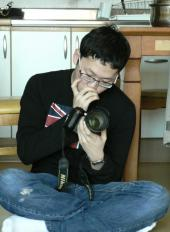

안녕하세요!

제 홈페이지에 와주셔서 감사합니다. 저는 조홍진이라고 합니다. 저는 현재 미국 시카고대학교 사회학과 박사과정에 재학중이며 지금은 한국에서 아카이브 및 인터뷰 바탕의 현지조사를 통해 박사논문을 준비하고 있습니다. 제 연구는 엘리트, 발전국가, 세계화라는 주제를 다루고 있습니다. 특히 박사논문에서는 어떻게 제3세계의 엘리트들이 발전국가와 세계화라는 역동적인 국내외의 기회구조 안에서 유학을 선택했는지, 또 어떻게 그/녀들의 전략이 변했는지를 탐구하고 있습니다. 이를 위해 현재는 한국인 유학생들의 도미유학이 지난 20세기 후반 이래 현재까지 어떻게 변화해왔는지를 연구하고 있습니다.
시카고대학교에서 사회학 박사과정을 시작하기 전에는 서울대학교에서 경제학 학사와 사회학 석사를 취득하였고, 이후 3년간 공군 장교로 복무했습니다. 한국 재벌의 승계 전략을 네트워크 분석 방법론으로 연구한 제 석사논문은 여기서 확인하실 수 있습니다. 그 외에도 저는 2018년에 세계가치관조사 자료를 활용하여 어떻게 사람들이 인권에 대해 인식하는지를 연구하는 등 다양한 주제와 방법론을 활용한 연구를 해왔습니다. 제 약력에 대해서는 여기서 보다 자세히 보실 수 있습니다.